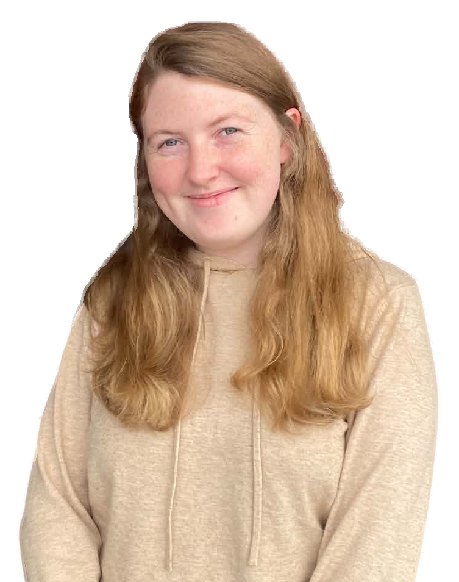

Om mig
Ja det är då jag som är Kajsa Widén! Jag är 23 år gammal, och är utbildad bagare och kontditor, så ja jag gillar att baka! Naturen älskar jag också! Är ute mycket med min hund, och helst min släkts hundar också. Det var därför jag valde just dessa tre bilderna, för de är saker som gör mig glad!
